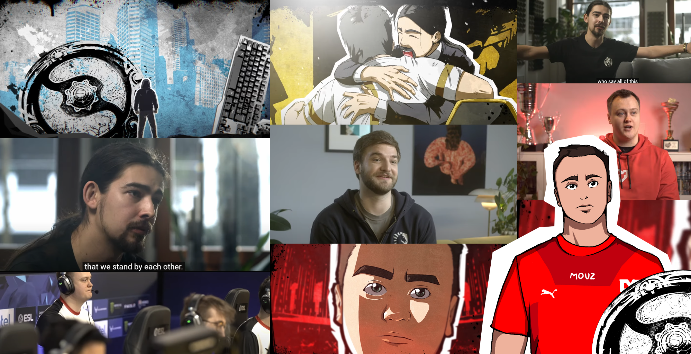

Explore the Team’s
journey with SAP.
Watch Video
Über 60 % der E-Sports-Coaches sehen Stressmanagement als zentrale Aufgabe neben der taktischen Vorbereitung. Trainer von MOUZ, Team Liquid und Mad Lions berichten offen über Stress, Erschöpfung und die mentalen Anforderungen des Wettbewerbs. Sie sprechen über entscheidende Momente, die über Sieg oder Niederlage entscheiden, und den Balanceakt zwischen Leistungsdruck und mentaler Gesundheit. Ich und mein Team haben das Interview mit einem animierten Intro und Zwischensequenzen aufgewertet, um es anschaulicher zu machen.
Over 60% of e-sports coaches see stress management as a key responsibility alongside tactics. Coaches from MOUZ, Team Liquid, and Mad Lions share their experiences with stress, exhaustion, and the mental demands of competition. They discuss crucial moments that decide wins and losses, as well as balancing performance pressure with mental health. My team enhanced the interview with an animated intro and sequences to create a more engaging experience.
